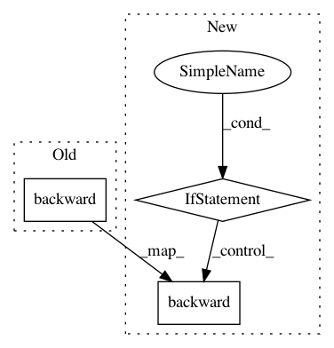

aab3902d4a7d55f5a86058854adc36b8a12c873f,catalyst/dl/callbacks/base.py,OptimizerCallback,on_batch_end,#OptimizerCallback#,202
Before Change
optimizer = state.get_key(
key="optimizer", inner_key=self.optimizer_key
)
loss.backward()
if (self._accumulation_counter + 1) % self.accumulation_steps == 0:
self.grad_step(
optimizer=optimizer,
After Change
// change in future.
// But alternative solution is to have AmpOptimizerCallback.
// or expose another c"tor argument.
if hasattr(optimizer, "_amp_stash"):
from apex import amp
with amp.scale_loss(loss, optimizer) as scaled_loss:
scaled_loss.backward()
else:
loss.backward()
if (self._accumulation_counter + 1) % self.accumulation_steps == 0:
self.grad_step(
optimizer=optimizer,
optimizer_wd=self._optimizer_wd,
In pattern: SUPERPATTERN
Frequency: 4
Non-data size: 3
Instances
Project Name: catalyst-team/catalyst
Commit Name: aab3902d4a7d55f5a86058854adc36b8a12c873f
Time: 2019-05-20
Author: ekhvedchenya@gmail.com
File Name: catalyst/dl/callbacks/base.py
Class Name: OptimizerCallback
Method Name: on_batch_end
Project Name: OpenNMT/OpenNMT-py
Commit Name: a850f4a77146f79da97a151281e474ee0cd70d1b
Time: 2019-02-01
Author: guillaumekln@users.noreply.github.com
File Name: onmt/trainer.py
Class Name: Trainer
Method Name: _gradient_accumulation
Project Name: catalyst-team/catalyst
Commit Name: aab3902d4a7d55f5a86058854adc36b8a12c873f
Time: 2019-05-20
Author: ekhvedchenya@gmail.com
File Name: catalyst/dl/callbacks/base.py
Class Name: OptimizerCallback
Method Name: on_batch_end
Project Name: dmlc/gluon-nlp
Commit Name: 7f20127fe6d49ee2423eff17bd5894f4b03d3c81
Time: 2019-06-26
Author: linhaibin.eric@gmail.com
File Name: scripts/bert/finetune_classifier.py
Class Name:
Method Name: train